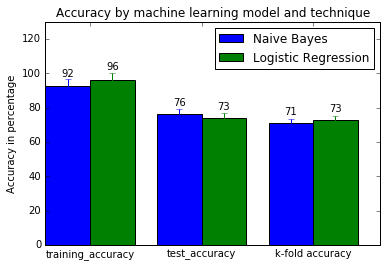
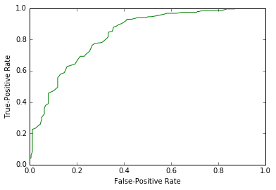

Data Science Assignment - 4 Write Up
Kushagra Thapar - UIN (671611758) - kthapa2
1. Tweet Processing Steps
Tweet Cleaning Steps
-
The first basic step which I have applied is to split the whole tweet with space " ".
-
Then I converted all the split words of the tweet to lower case.
-
I have used Porter Stemmer to stem the words to their root words.
-
I searched for @User and changed it "AT_USER" word.
-
I searched for words starting with "www." or "http://" or "https://" to find the urls and replaced them
with "URL"
-
After replacing these words, I have stripped all the punctuations.
-
I have replaced all the words starting from "#xyz" to "xyz.
-
I have also ignored the words, which start from an alphabet.
-
I have also ignored the stopwords.
RDD Formation
-
After cleaning the Tweets, I have created the bag of words model from tweets.
-
After forming the bag of words model, I have used TF-IDF to convert the bag of words model to Frequencies which
then can be input to different Machine Learning Models.
-
I have input this TF-IDF RDD to Naive Bayes Model and Logistic Regression Model.
2. Feature Space Description
-
The Feature Space here for this Twitter Sentiment Prediction Assignment, is the bag of words model.
-
In this model we process each tweet and then find the most informative features, by finding out the most
informative words.
-
I have used Unigrams for extracting the informative words.
-
The most informative words can be found out by cleaning the words and extracting only those words which are
important for a tweet.
-
Then these important words become the features for a tweet and then they are trained using different models.
-
Here I have extracted the features using below mentioned processes.
3. Extra Work Processing
-
I have trained the bag of words model using Hashing Term Frequency process. Then I have applied Inverse Document
Term Frequency on the bag of words model of training data.
-
For the testing data, I have cleaned the testing data as well using the same techniques which I have mentioned
above.
-
After cleaning the testing data, I have created the bag of words model from the testing data.
-
Hashing Term Frequency is then applied to the testing bag of words model.
-
Cleaning and creating the Hash Term Frequency has helped me a lot to get better accuracy and precision for both
the models, i.e. Naive Bayes and Logistic Regression.
4. Accuracy, Precision, Recall, F Measure, Confusion Matrix
Naive Bayes Accuracy
- Accuracy on Training Data -> 92.4 %
- Accuracy on Testing Data -> 76.04 %
- K - Fold Accuracy -> 71.1 %
Logistic Regression Accuracy
- Accuracy on Training Data -> 96.0 %
- Accuracy on Testing Data -> 73.1 %
- K - Fold Accuracy -> 73.1 %
Naive Bayes Precision, Recall, F Measure and Confusion Matrix
- To calculate these values, I have used the "MulticlassMetrics" class and APIs of Spark
- Precision -> 76.4 %
- Recall -> 76.04 %
- F Measure Score -> 76.04 %
- Confusion Matrix ->
Logistic Regression Precision, Recall, F Measure and Confusion Matrix
- To calculate these values, I have used the "MulticlassMetrics" class and APIs of Spark
- Precision -> 73.8 %
- Recall -> 73.8 %
- F Measure Score -> 73.8 %
- Confusion Matrix ->
5. Accuracy Plots
-
I have plotted the Accuracy of Naive Bayes and Logistic Regression in a Bar Chart with comparing each type of
accuracy in both the cases. Below is the accuracy plots:

- Here we can clearly see that Naive Bayes overfits the most. Hence it is not a good model for this particular
project.
6. Standard Terminologies
-
Precision -> Precision can be defined as the ratio of the correct positive observations to the total positive
observations. This can be formulated as
[True Positive Values / (True Positive Values + False Positive
Values)]
-
Recall -> Similarly, Recall can be defined as the ratio of the correctly predicted positive observations to the
total positive observations. This can be formulated as
[True Positive Values / (True Positive Values + False
Negative Values)]
-
F Score -> F Measure is the measure of a test's accuracy. The F1 score can be defined as the weighted average of
the precision and recall. Hence it takes both false positive values and false negative values.
-
Confusion Matrix -> Confusion Matrix can be defined as the measure to describe the performance of a
classification of a model on a set of test data for which the correct values are already known.
7. ROC Curve and Area Under the Curve
- Below is the ROC curve plot and the Area under the curve is also mentioned. I have plotted the ROC curve just
for the Logistic Regression.

-
Area under the ROC curve is 0.5, which is calculated using the "BinaryClassificationMetrics" class and APIs of
Spark.
8. Top 20 informative features
- I couldn't find any Spark API to find our the top 20 most informative features. It would have been better if we
were allowed to use other Python Libraries as well.
9. Classifier Performance
-
From the above plots, we can clearly see the Logistic Regression performs very better than the Naive Bayes
classifier.
-
The reason behind this difference is that Naive Bayes takes a very big assumption into account. The assumption
is that the features are independent. But this is not the case in the bag of words model. Hence the Logistic
Regression model performs better than the Naive Bayes Model.
10. Correctly Predicted Tweets and Incorrectly Predicted Tweets
-
5 Correctly Predicted Tweets are:
-
Reading my kindle2... Love it... Lee childs is good read. -> 0.91
-
@kenburbary You'll love your Kindle2. I've had mine for a few months and never looked back. The new big
one is huge! No need for remorse! :) -> 0.81
-
good news, just had a call from the Visa office, saying everything is fine.....what a relief! I am sick
of scams out there! Stealing! -> 0.89
-
North Korea, please cease this douchebaggery. China doesn't even like you anymore. http://bit.ly/NeHSl
-> 0.12
-
It's unfortunate that after the Stimulus plan was put in place twice to help GM on the back of the
American people has led to the inevitable -> 0.23
-
5 Incorrectly Predicted Tweets are:
-
watching Night at The Museum . Lmao -> 0.43
-
@kirstiealley my dentist is great but she's expensive...=( -> 0.81
-
Safari 4 is fast :) Even on my shitty AT&T tethering. -> 0.9
-
The Times of India: The wonder that is India's election. http://bit.ly/p7u1H -> 0.28
-
Colin Powell rocked yesterday on CBS. Cheney needs to shut the hell up and go home.Powell is a man of
Honor and served our country proudly -> 0.73